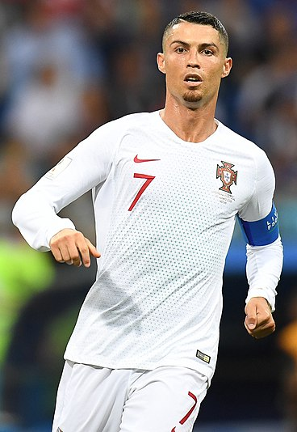

Curriculum Vitae

Cristiano Ronaldo dos Santos Aveiro
Resumen
futbolista portugués que juega como delantero en el Manchester United Football Club de la Premier League de Inglaterra y en la selección de Portugal, de la cual es su capitán y máximo goleador histórico.
Datos Personales
- Fecha nacimiento: 5 de febrero de 1985 (37 años)
- Nacionalidad : Portuguesa
- Correo : prueba@mail.com
Premios y Reconocimientos
- 2014 - Premio UEFA al Mejor Jugador en Europa
- 2016 - Balón de Oro
- 2017 - Premio UEFA al Mejor Jugador en Europa
- 2021 - Bota de Oro de la Eurocopa 2020
Clubes
- Sporting C. P.
- Manchester United F. C.
- Real Madrid C. F.
- Juventus F. C.
Fuente:
Wikipedia
Portafolio